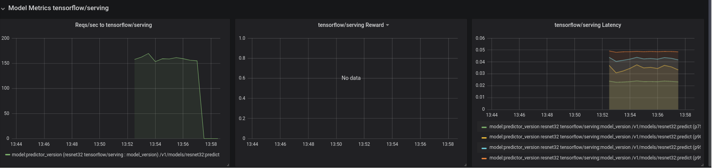
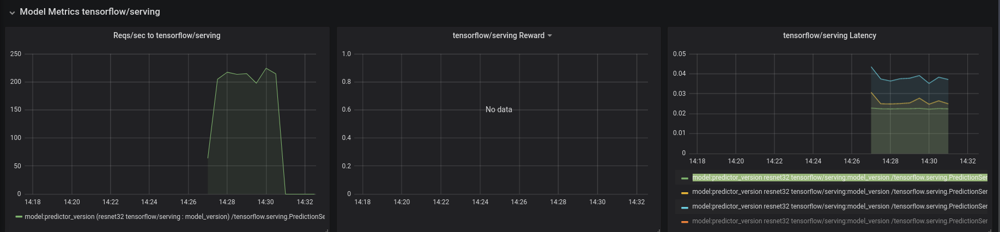

This page was generated from examples/kafka/cifar10/cifar10_kafka.ipynb.
Seldon Kafka Integration Example with CIFAR10 Model¶
In this example we will run SeldonDeployments for a CIFAR10 Tensorflow model which take their inputs from a Kafka topic and push their outputs to a Kafka topic. We will experiment with both REST and gRPC Seldon graphs. For REST we will load our input topic with Tensorflow JSON requests and for gRPC we will load Tensorflow PredictRequest protoBuffers.
Requirements¶
[1]:
!pip install -r requirements.txt
Requirement already satisfied: confluent-kafka in /home/clive/anaconda3/envs/core/lib/python3.7/site-packages (from -r requirements.txt (line 1)) (1.8.2)
Requirement already satisfied: tensorflow-serving-api in /home/clive/anaconda3/envs/core/lib/python3.7/site-packages (from -r requirements.txt (line 2)) (2.8.0)
Requirement already satisfied: grpcio<2,>=1.0 in /home/clive/anaconda3/envs/core/lib/python3.7/site-packages (from tensorflow-serving-api->-r requirements.txt (line 2)) (1.38.1)
Requirement already satisfied: protobuf>=3.6.0 in /home/clive/anaconda3/envs/core/lib/python3.7/site-packages (from tensorflow-serving-api->-r requirements.txt (line 2)) (3.17.3)
Requirement already satisfied: tensorflow<3,>=2.8.0 in /home/clive/anaconda3/envs/core/lib/python3.7/site-packages (from tensorflow-serving-api->-r requirements.txt (line 2)) (2.8.0)
Requirement already satisfied: six>=1.5.2 in /home/clive/anaconda3/envs/core/lib/python3.7/site-packages (from grpcio<2,>=1.0->tensorflow-serving-api->-r requirements.txt (line 2)) (1.15.0)
Requirement already satisfied: astunparse>=1.6.0 in /home/clive/anaconda3/envs/core/lib/python3.7/site-packages (from tensorflow<3,>=2.8.0->tensorflow-serving-api->-r requirements.txt (line 2)) (1.6.3)
Requirement already satisfied: gast>=0.2.1 in /home/clive/anaconda3/envs/core/lib/python3.7/site-packages (from tensorflow<3,>=2.8.0->tensorflow-serving-api->-r requirements.txt (line 2)) (0.4.0)
Requirement already satisfied: numpy>=1.20 in /home/clive/anaconda3/envs/core/lib/python3.7/site-packages (from tensorflow<3,>=2.8.0->tensorflow-serving-api->-r requirements.txt (line 2)) (1.21.5)
Requirement already satisfied: setuptools in /home/clive/anaconda3/envs/core/lib/python3.7/site-packages (from tensorflow<3,>=2.8.0->tensorflow-serving-api->-r requirements.txt (line 2)) (52.0.0.post20210125)
Requirement already satisfied: keras-preprocessing>=1.1.1 in /home/clive/anaconda3/envs/core/lib/python3.7/site-packages (from tensorflow<3,>=2.8.0->tensorflow-serving-api->-r requirements.txt (line 2)) (1.1.2)
Requirement already satisfied: wrapt>=1.11.0 in /home/clive/anaconda3/envs/core/lib/python3.7/site-packages (from tensorflow<3,>=2.8.0->tensorflow-serving-api->-r requirements.txt (line 2)) (1.12.1)
Requirement already satisfied: keras<2.9,>=2.8.0rc0 in /home/clive/anaconda3/envs/core/lib/python3.7/site-packages (from tensorflow<3,>=2.8.0->tensorflow-serving-api->-r requirements.txt (line 2)) (2.8.0)
Requirement already satisfied: tensorboard<2.9,>=2.8 in /home/clive/anaconda3/envs/core/lib/python3.7/site-packages (from tensorflow<3,>=2.8.0->tensorflow-serving-api->-r requirements.txt (line 2)) (2.8.0)
Requirement already satisfied: libclang>=9.0.1 in /home/clive/anaconda3/envs/core/lib/python3.7/site-packages (from tensorflow<3,>=2.8.0->tensorflow-serving-api->-r requirements.txt (line 2)) (13.0.0)
Requirement already satisfied: opt-einsum>=2.3.2 in /home/clive/anaconda3/envs/core/lib/python3.7/site-packages (from tensorflow<3,>=2.8.0->tensorflow-serving-api->-r requirements.txt (line 2)) (3.3.0)
Requirement already satisfied: tf-estimator-nightly==2.8.0.dev2021122109 in /home/clive/anaconda3/envs/core/lib/python3.7/site-packages (from tensorflow<3,>=2.8.0->tensorflow-serving-api->-r requirements.txt (line 2)) (2.8.0.dev2021122109)
Requirement already satisfied: termcolor>=1.1.0 in /home/clive/anaconda3/envs/core/lib/python3.7/site-packages (from tensorflow<3,>=2.8.0->tensorflow-serving-api->-r requirements.txt (line 2)) (1.1.0)
Requirement already satisfied: h5py>=2.9.0 in /home/clive/anaconda3/envs/core/lib/python3.7/site-packages (from tensorflow<3,>=2.8.0->tensorflow-serving-api->-r requirements.txt (line 2)) (3.1.0)
Requirement already satisfied: google-pasta>=0.1.1 in /home/clive/anaconda3/envs/core/lib/python3.7/site-packages (from tensorflow<3,>=2.8.0->tensorflow-serving-api->-r requirements.txt (line 2)) (0.2.0)
Requirement already satisfied: tensorflow-io-gcs-filesystem>=0.23.1 in /home/clive/anaconda3/envs/core/lib/python3.7/site-packages (from tensorflow<3,>=2.8.0->tensorflow-serving-api->-r requirements.txt (line 2)) (0.24.0)
Requirement already satisfied: flatbuffers>=1.12 in /home/clive/anaconda3/envs/core/lib/python3.7/site-packages (from tensorflow<3,>=2.8.0->tensorflow-serving-api->-r requirements.txt (line 2)) (1.12)
Requirement already satisfied: absl-py>=0.4.0 in /home/clive/anaconda3/envs/core/lib/python3.7/site-packages (from tensorflow<3,>=2.8.0->tensorflow-serving-api->-r requirements.txt (line 2)) (0.13.0)
Requirement already satisfied: typing-extensions>=3.6.6 in /home/clive/anaconda3/envs/core/lib/python3.7/site-packages (from tensorflow<3,>=2.8.0->tensorflow-serving-api->-r requirements.txt (line 2)) (3.7.4.3)
Requirement already satisfied: wheel<1.0,>=0.23.0 in /home/clive/anaconda3/envs/core/lib/python3.7/site-packages (from astunparse>=1.6.0->tensorflow<3,>=2.8.0->tensorflow-serving-api->-r requirements.txt (line 2)) (0.36.2)
Requirement already satisfied: cached-property in /home/clive/anaconda3/envs/core/lib/python3.7/site-packages (from h5py>=2.9.0->tensorflow<3,>=2.8.0->tensorflow-serving-api->-r requirements.txt (line 2)) (1.5.2)
Requirement already satisfied: google-auth-oauthlib<0.5,>=0.4.1 in /home/clive/anaconda3/envs/core/lib/python3.7/site-packages (from tensorboard<2.9,>=2.8->tensorflow<3,>=2.8.0->tensorflow-serving-api->-r requirements.txt (line 2)) (0.4.4)
Requirement already satisfied: werkzeug>=0.11.15 in /home/clive/anaconda3/envs/core/lib/python3.7/site-packages (from tensorboard<2.9,>=2.8->tensorflow<3,>=2.8.0->tensorflow-serving-api->-r requirements.txt (line 2)) (2.0.1)
Requirement already satisfied: requests<3,>=2.21.0 in /home/clive/anaconda3/envs/core/lib/python3.7/site-packages (from tensorboard<2.9,>=2.8->tensorflow<3,>=2.8.0->tensorflow-serving-api->-r requirements.txt (line 2)) (2.25.1)
Requirement already satisfied: tensorboard-plugin-wit>=1.6.0 in /home/clive/anaconda3/envs/core/lib/python3.7/site-packages (from tensorboard<2.9,>=2.8->tensorflow<3,>=2.8.0->tensorflow-serving-api->-r requirements.txt (line 2)) (1.8.0)
Requirement already satisfied: google-auth<3,>=1.6.3 in /home/clive/anaconda3/envs/core/lib/python3.7/site-packages (from tensorboard<2.9,>=2.8->tensorflow<3,>=2.8.0->tensorflow-serving-api->-r requirements.txt (line 2)) (1.32.1)
Requirement already satisfied: markdown>=2.6.8 in /home/clive/anaconda3/envs/core/lib/python3.7/site-packages (from tensorboard<2.9,>=2.8->tensorflow<3,>=2.8.0->tensorflow-serving-api->-r requirements.txt (line 2)) (3.3.4)
Requirement already satisfied: tensorboard-data-server<0.7.0,>=0.6.0 in /home/clive/anaconda3/envs/core/lib/python3.7/site-packages (from tensorboard<2.9,>=2.8->tensorflow<3,>=2.8.0->tensorflow-serving-api->-r requirements.txt (line 2)) (0.6.1)
Requirement already satisfied: cachetools<5.0,>=2.0.0 in /home/clive/anaconda3/envs/core/lib/python3.7/site-packages (from google-auth<3,>=1.6.3->tensorboard<2.9,>=2.8->tensorflow<3,>=2.8.0->tensorflow-serving-api->-r requirements.txt (line 2)) (4.2.2)
Requirement already satisfied: pyasn1-modules>=0.2.1 in /home/clive/anaconda3/envs/core/lib/python3.7/site-packages (from google-auth<3,>=1.6.3->tensorboard<2.9,>=2.8->tensorflow<3,>=2.8.0->tensorflow-serving-api->-r requirements.txt (line 2)) (0.2.8)
Requirement already satisfied: rsa<5,>=3.1.4 in /home/clive/anaconda3/envs/core/lib/python3.7/site-packages (from google-auth<3,>=1.6.3->tensorboard<2.9,>=2.8->tensorflow<3,>=2.8.0->tensorflow-serving-api->-r requirements.txt (line 2)) (4.7.2)
Requirement already satisfied: requests-oauthlib>=0.7.0 in /home/clive/anaconda3/envs/core/lib/python3.7/site-packages (from google-auth-oauthlib<0.5,>=0.4.1->tensorboard<2.9,>=2.8->tensorflow<3,>=2.8.0->tensorflow-serving-api->-r requirements.txt (line 2)) (1.3.0)
Requirement already satisfied: importlib-metadata in /home/clive/anaconda3/envs/core/lib/python3.7/site-packages (from markdown>=2.6.8->tensorboard<2.9,>=2.8->tensorflow<3,>=2.8.0->tensorflow-serving-api->-r requirements.txt (line 2)) (3.10.1)
Requirement already satisfied: pyasn1<0.5.0,>=0.4.6 in /home/clive/anaconda3/envs/core/lib/python3.7/site-packages (from pyasn1-modules>=0.2.1->google-auth<3,>=1.6.3->tensorboard<2.9,>=2.8->tensorflow<3,>=2.8.0->tensorflow-serving-api->-r requirements.txt (line 2)) (0.4.8)
Requirement already satisfied: urllib3<1.27,>=1.21.1 in /home/clive/anaconda3/envs/core/lib/python3.7/site-packages (from requests<3,>=2.21.0->tensorboard<2.9,>=2.8->tensorflow<3,>=2.8.0->tensorflow-serving-api->-r requirements.txt (line 2)) (1.26.5)
Requirement already satisfied: idna<3,>=2.5 in /home/clive/anaconda3/envs/core/lib/python3.7/site-packages (from requests<3,>=2.21.0->tensorboard<2.9,>=2.8->tensorflow<3,>=2.8.0->tensorflow-serving-api->-r requirements.txt (line 2)) (2.10)
Requirement already satisfied: chardet<5,>=3.0.2 in /home/clive/anaconda3/envs/core/lib/python3.7/site-packages (from requests<3,>=2.21.0->tensorboard<2.9,>=2.8->tensorflow<3,>=2.8.0->tensorflow-serving-api->-r requirements.txt (line 2)) (4.0.0)
Requirement already satisfied: certifi>=2017.4.17 in /home/clive/anaconda3/envs/core/lib/python3.7/site-packages (from requests<3,>=2.21.0->tensorboard<2.9,>=2.8->tensorflow<3,>=2.8.0->tensorflow-serving-api->-r requirements.txt (line 2)) (2021.5.30)
Requirement already satisfied: oauthlib>=3.0.0 in /home/clive/anaconda3/envs/core/lib/python3.7/site-packages (from requests-oauthlib>=0.7.0->google-auth-oauthlib<0.5,>=0.4.1->tensorboard<2.9,>=2.8->tensorflow<3,>=2.8.0->tensorflow-serving-api->-r requirements.txt (line 2)) (3.1.1)
Requirement already satisfied: zipp>=0.5 in /home/clive/anaconda3/envs/core/lib/python3.7/site-packages (from importlib-metadata->markdown>=2.6.8->tensorboard<2.9,>=2.8->tensorflow<3,>=2.8.0->tensorflow-serving-api->-r requirements.txt (line 2)) (3.4.1)
Setup Kafka¶
Install Strimzi on cluster
[2]:
!helm repo add strimzi https://strimzi.io/charts/
"strimzi" already exists with the same configuration, skipping
[3]:
!helm install my-release strimzi/strimzi-kafka-operator
NAME: my-release
LAST DEPLOYED: Thu May 19 09:40:16 2022
NAMESPACE: seldon
STATUS: deployed
REVISION: 1
TEST SUITE: None
NOTES:
Thank you for installing strimzi-kafka-operator-0.28.0
To create a Kafka cluster refer to the following documentation.
https://strimzi.io/docs/operators/latest/deploying.html#deploying-cluster-operator-helm-chart-str
Set the following to whether you are running a local Kind cluster or a cloud based cluster.
[2]:
clusterType = "kind"
# clusterType="cloud"
[20]:
if clusterType == "kind":
!kubectl apply -f cluster-kind.yaml
else:
!kubectl apply -f cluster-cloud.yaml
kafka.kafka.strimzi.io/my-cluster created
Get broker endpoint.
[6]:
if clusterType == "kind":
res = !kubectl get service my-cluster-kafka-plain-bootstrap -n seldon -o=jsonpath='{.status.loadBalancer.ingress[0].ip}'
ip = res[0]
%env BROKER=$ip:9092
else:
res = !kubectl get service my-cluster-kafka-external-bootstrap -o=jsonpath='{.status.loadBalancer.ingress[0].hostname}'
if len(res) == 1:
hostname = res[0]
%env BROKER=$h:9094
else:
res = !kubectl get service my-cluster-kafka-external-bootstrap -o=jsonpath='{.status.loadBalancer.ingress[0].ip}'
ip = res[0]
%env BROKER=$ip:9094
env: BROKER=172.18.255.3:9092
[7]:
%%writefile topics.yaml
apiVersion: kafka.strimzi.io/v1beta1
kind: KafkaTopic
metadata:
name: cifar10-rest-input
labels:
strimzi.io/cluster: "my-cluster"
spec:
partitions: 2
replicas: 1
---
apiVersion: kafka.strimzi.io/v1beta1
kind: KafkaTopic
metadata:
name: cifar10-rest-output
labels:
strimzi.io/cluster: "my-cluster"
spec:
partitions: 2
replicas: 1
---
apiVersion: kafka.strimzi.io/v1beta1
kind: KafkaTopic
metadata:
name: cifar10-grpc-input
labels:
strimzi.io/cluster: "my-cluster"
spec:
partitions: 2
replicas: 1
---
apiVersion: kafka.strimzi.io/v1beta1
kind: KafkaTopic
metadata:
name: cifar10-grpc-output
labels:
strimzi.io/cluster: "my-cluster"
spec:
partitions: 2
replicas: 1
Overwriting topics.yaml
[8]:
!kubectl apply -f topics.yaml
kafkatopic.kafka.strimzi.io/cifar10-rest-input unchanged
kafkatopic.kafka.strimzi.io/cifar10-rest-output unchanged
kafkatopic.kafka.strimzi.io/cifar10-grpc-input unchanged
kafkatopic.kafka.strimzi.io/cifar10-grpc-output unchanged
Install Seldon¶
Download Test Request Data¶
We have two example datasets containing 50,000 requests in tensorflow serving format for CIFAR10. One in JSON format and one as length encoded proto buffers.
[17]:
!gsutil cp gs://seldon-datasets/cifar10/requests/tensorflow/cifar10_tensorflow.json.gz cifar10_tensorflow.json.gz
!gunzip cifar10_tensorflow.json.gz
!gsutil cp gs://seldon-datasets/cifar10/requests/tensorflow/cifar10_tensorflow.proto cifar10_tensorflow.proto
Updates are available for some Google Cloud CLI components. To install them,
please run:
$ gcloud components update
Copying gs://seldon-datasets/cifar10/requests/tensorflow/cifar10_tensorflow.json.gz...
==> NOTE: You are downloading one or more large file(s), which would
run significantly faster if you enabled sliced object downloads. This
feature is enabled by default but requires that compiled crcmod be
installed (see "gsutil help crcmod").
/ [1 files][324.3 MiB/324.3 MiB] 13.9 MiB/s
Operation completed over 1 objects/324.3 MiB.
gzip: cifar10_tensorflow.json already exists; do you wish to overwrite (y or n)? ^C
Copying gs://seldon-datasets/cifar10/requests/tensorflow/cifar10_tensorflow.proto...
==> NOTE: You are downloading one or more large file(s), which would
run significantly faster if you enabled sliced object downloads. This
feature is enabled by default but requires that compiled crcmod be
installed (see "gsutil help crcmod").
\ [1 files][589.3 MiB/589.3 MiB] 13.9 MiB/s
Operation completed over 1 objects/589.3 MiB.
Test CIFAR10 REST Model¶
Upload tensorflow serving rest requests to kafka. This may take some time dependent on your network connection.
[9]:
!python ../../../util/kafka/test-client.py produce $BROKER cifar10-rest-input --file cifar10_tensorflow.json
2022-05-19 13:41:46.005544: W tensorflow/stream_executor/platform/default/dso_loader.cc:64] Could not load dynamic library 'libcudart.so.11.0'; dlerror: libcudart.so.11.0: cannot open shared object file: No such file or directory
2022-05-19 13:41:46.005581: I tensorflow/stream_executor/cuda/cudart_stub.cc:29] Ignore above cudart dlerror if you do not have a GPU set up on your machine.
%4|1652964107.403|CONFWARN|clive-T470p#producer-1| [thrd:app]: Configuration property group.id is a consumer property and will be ignored by this producer instance
%4|1652964107.403|CONFWARN|clive-T470p#producer-1| [thrd:app]: Configuration property auto.offset.reset is a consumer property and will be ignored by this producer instance
messages sent: 100
messages sent: 200
messages sent: 300
messages sent: 400
messages sent: 500
messages sent: 600
messages sent: 700
messages sent: 800
messages sent: 900
messages sent: 1000
messages sent: 1100
messages sent: 1200
messages sent: 1300
messages sent: 1400
messages sent: 1500
messages sent: 1600
messages sent: 1700
messages sent: 1800
messages sent: 1900
messages sent: 2000
messages sent: 2100
messages sent: 2200
messages sent: 2300
messages sent: 2400
messages sent: 2500
messages sent: 2600
messages sent: 2700
messages sent: 2800
messages sent: 2900
messages sent: 3000
messages sent: 3100
messages sent: 3200
messages sent: 3300
messages sent: 3400
messages sent: 3500
messages sent: 3600
messages sent: 3700
messages sent: 3800
messages sent: 3900
messages sent: 4000
messages sent: 4100
messages sent: 4200
messages sent: 4300
messages sent: 4400
messages sent: 4500
messages sent: 4600
messages sent: 4700
messages sent: 4800
messages sent: 4900
messages sent: 5000
messages sent: 5100
messages sent: 5200
messages sent: 5300
messages sent: 5400
messages sent: 5500
messages sent: 5600
messages sent: 5700
messages sent: 5800
messages sent: 5900
messages sent: 6000
messages sent: 6100
messages sent: 6200
messages sent: 6300
messages sent: 6400
messages sent: 6500
messages sent: 6600
messages sent: 6700
messages sent: 6800
messages sent: 6900
messages sent: 7000
messages sent: 7100
messages sent: 7200
messages sent: 7300
messages sent: 7400
messages sent: 7500
messages sent: 7600
messages sent: 7700
messages sent: 7800
messages sent: 7900
messages sent: 8000
messages sent: 8100
messages sent: 8200
messages sent: 8300
messages sent: 8400
messages sent: 8500
messages sent: 8600
messages sent: 8700
messages sent: 8800
messages sent: 8900
messages sent: 9000
messages sent: 9100
messages sent: 9200
messages sent: 9300
messages sent: 9400
messages sent: 9500
messages sent: 9600
messages sent: 9700
messages sent: 9800
messages sent: 9900
messages sent: 10000
messages sent: 10100
messages sent: 10200
messages sent: 10300
messages sent: 10400
messages sent: 10500
messages sent: 10600
messages sent: 10700
messages sent: 10800
messages sent: 10900
messages sent: 11000
messages sent: 11100
messages sent: 11200
messages sent: 11300
messages sent: 11400
messages sent: 11500
messages sent: 11600
messages sent: 11700
messages sent: 11800
messages sent: 11900
messages sent: 12000
messages sent: 12100
messages sent: 12200
messages sent: 12300
messages sent: 12400
messages sent: 12500
messages sent: 12600
messages sent: 12700
messages sent: 12800
messages sent: 12900
messages sent: 13000
messages sent: 13100
messages sent: 13200
messages sent: 13300
messages sent: 13400
messages sent: 13500
messages sent: 13600
messages sent: 13700
messages sent: 13800
messages sent: 13900
messages sent: 14000
messages sent: 14100
messages sent: 14200
messages sent: 14300
messages sent: 14400
messages sent: 14500
messages sent: 14600
messages sent: 14700
messages sent: 14800
messages sent: 14900
messages sent: 15000
messages sent: 15100
messages sent: 15200
messages sent: 15300
messages sent: 15400
messages sent: 15500
messages sent: 15600
messages sent: 15700
messages sent: 15800
messages sent: 15900
messages sent: 16000
messages sent: 16100
messages sent: 16200
messages sent: 16300
messages sent: 16400
messages sent: 16500
messages sent: 16600
messages sent: 16700
messages sent: 16800
messages sent: 16900
messages sent: 17000
messages sent: 17100
messages sent: 17200
messages sent: 17300
messages sent: 17400
messages sent: 17500
messages sent: 17600
messages sent: 17700
messages sent: 17800
messages sent: 17900
messages sent: 18000
messages sent: 18100
messages sent: 18200
messages sent: 18300
messages sent: 18400
messages sent: 18500
messages sent: 18600
messages sent: 18700
messages sent: 18800
messages sent: 18900
messages sent: 19000
messages sent: 19100
messages sent: 19200
messages sent: 19300
messages sent: 19400
messages sent: 19500
messages sent: 19600
messages sent: 19700
messages sent: 19800
messages sent: 19900
messages sent: 20000
messages sent: 20100
messages sent: 20200
messages sent: 20300
messages sent: 20400
messages sent: 20500
messages sent: 20600
messages sent: 20700
messages sent: 20800
messages sent: 20900
messages sent: 21000
messages sent: 21100
messages sent: 21200
messages sent: 21300
messages sent: 21400
messages sent: 21500
messages sent: 21600
messages sent: 21700
messages sent: 21800
messages sent: 21900
messages sent: 22000
messages sent: 22100
messages sent: 22200
messages sent: 22300
messages sent: 22400
messages sent: 22500
messages sent: 22600
messages sent: 22700
messages sent: 22800
messages sent: 22900
messages sent: 23000
messages sent: 23100
messages sent: 23200
messages sent: 23300
messages sent: 23400
messages sent: 23500
messages sent: 23600
messages sent: 23700
messages sent: 23800
messages sent: 23900
messages sent: 24000
messages sent: 24100
messages sent: 24200
messages sent: 24300
messages sent: 24400
messages sent: 24500
messages sent: 24600
messages sent: 24700
messages sent: 24800
messages sent: 24900
messages sent: 25000
messages sent: 25100
messages sent: 25200
messages sent: 25300
messages sent: 25400
messages sent: 25500
messages sent: 25600
messages sent: 25700
messages sent: 25800
messages sent: 25900
messages sent: 26000
messages sent: 26100
messages sent: 26200
messages sent: 26300
messages sent: 26400
messages sent: 26500
messages sent: 26600
messages sent: 26700
messages sent: 26800
messages sent: 26900
messages sent: 27000
messages sent: 27100
messages sent: 27200
messages sent: 27300
messages sent: 27400
messages sent: 27500
messages sent: 27600
messages sent: 27700
messages sent: 27800
messages sent: 27900
messages sent: 28000
messages sent: 28100
messages sent: 28200
messages sent: 28300
messages sent: 28400
messages sent: 28500
messages sent: 28600
messages sent: 28700
messages sent: 28800
messages sent: 28900
messages sent: 29000
messages sent: 29100
messages sent: 29200
messages sent: 29300
messages sent: 29400
messages sent: 29500
messages sent: 29600
messages sent: 29700
messages sent: 29800
messages sent: 29900
messages sent: 30000
messages sent: 30100
messages sent: 30200
messages sent: 30300
messages sent: 30400
messages sent: 30500
messages sent: 30600
messages sent: 30700
messages sent: 30800
messages sent: 30900
messages sent: 31000
messages sent: 31100
messages sent: 31200
messages sent: 31300
messages sent: 31400
messages sent: 31500
messages sent: 31600
messages sent: 31700
messages sent: 31800
messages sent: 31900
messages sent: 32000
messages sent: 32100
messages sent: 32200
messages sent: 32300
messages sent: 32400
messages sent: 32500
messages sent: 32600
messages sent: 32700
messages sent: 32800
messages sent: 32900
messages sent: 33000
messages sent: 33100
messages sent: 33200
messages sent: 33300
messages sent: 33400
messages sent: 33500
messages sent: 33600
messages sent: 33700
messages sent: 33800
messages sent: 33900
messages sent: 34000
messages sent: 34100
messages sent: 34200
messages sent: 34300
messages sent: 34400
messages sent: 34500
messages sent: 34600
messages sent: 34700
messages sent: 34800
messages sent: 34900
messages sent: 35000
messages sent: 35100
messages sent: 35200
messages sent: 35300
messages sent: 35400
messages sent: 35500
messages sent: 35600
messages sent: 35700
messages sent: 35800
messages sent: 35900
messages sent: 36000
messages sent: 36100
messages sent: 36200
messages sent: 36300
messages sent: 36400
messages sent: 36500
messages sent: 36600
messages sent: 36700
messages sent: 36800
messages sent: 36900
messages sent: 37000
messages sent: 37100
messages sent: 37200
messages sent: 37300
messages sent: 37400
messages sent: 37500
messages sent: 37600
messages sent: 37700
messages sent: 37800
messages sent: 37900
messages sent: 38000
messages sent: 38100
messages sent: 38200
messages sent: 38300
messages sent: 38400
messages sent: 38500
messages sent: 38600
messages sent: 38700
messages sent: 38800
messages sent: 38900
messages sent: 39000
messages sent: 39100
messages sent: 39200
messages sent: 39300
messages sent: 39400
messages sent: 39500
messages sent: 39600
messages sent: 39700
messages sent: 39800
messages sent: 39900
messages sent: 40000
messages sent: 40100
messages sent: 40200
messages sent: 40300
messages sent: 40400
messages sent: 40500
messages sent: 40600
messages sent: 40700
messages sent: 40800
messages sent: 40900
messages sent: 41000
messages sent: 41100
messages sent: 41200
messages sent: 41300
messages sent: 41400
messages sent: 41500
messages sent: 41600
messages sent: 41700
messages sent: 41800
messages sent: 41900
messages sent: 42000
messages sent: 42100
messages sent: 42200
messages sent: 42300
messages sent: 42400
messages sent: 42500
messages sent: 42600
messages sent: 42700
messages sent: 42800
messages sent: 42900
messages sent: 43000
messages sent: 43100
messages sent: 43200
messages sent: 43300
messages sent: 43400
messages sent: 43500
messages sent: 43600
messages sent: 43700
messages sent: 43800
messages sent: 43900
messages sent: 44000
messages sent: 44100
messages sent: 44200
messages sent: 44300
messages sent: 44400
messages sent: 44500
messages sent: 44600
messages sent: 44700
messages sent: 44800
messages sent: 44900
messages sent: 45000
messages sent: 45100
messages sent: 45200
messages sent: 45300
messages sent: 45400
messages sent: 45500
messages sent: 45600
messages sent: 45700
messages sent: 45800
messages sent: 45900
messages sent: 46000
messages sent: 46100
messages sent: 46200
messages sent: 46300
messages sent: 46400
messages sent: 46500
messages sent: 46600
messages sent: 46700
messages sent: 46800
messages sent: 46900
messages sent: 47000
messages sent: 47100
messages sent: 47200
messages sent: 47300
messages sent: 47400
messages sent: 47500
messages sent: 47600
messages sent: 47700
messages sent: 47800
messages sent: 47900
messages sent: 48000
messages sent: 48100
messages sent: 48200
messages sent: 48300
messages sent: 48400
messages sent: 48500
messages sent: 48600
messages sent: 48700
messages sent: 48800
messages sent: 48900
messages sent: 49000
messages sent: 49100
messages sent: 49200
messages sent: 49300
messages sent: 49400
messages sent: 49500
messages sent: 49600
messages sent: 49700
messages sent: 49800
messages sent: 49900
messages sent: 50000
Final messages sent count: 50000
[11]:
res = !kubectl get service my-cluster-kafka-plain-bootstrap -o=jsonpath='{.spec.clusterIP}'
ip = res[0]
%env BROKER_CIP=$ip
env: BROKER_CIP=10.96.66.27
[12]:
%%writefile cifar10_rest.yaml
apiVersion: machinelearning.seldon.io/v1
kind: SeldonDeployment
metadata:
name: tfserving-cifar10
spec:
protocol: tensorflow
transport: rest
serverType: kafka
predictors:
- componentSpecs:
- spec:
containers:
- args:
- --port=8500
- --rest_api_port=8501
- --model_name=resnet32
- --model_base_path=gs://seldon-models/tfserving/cifar10/resnet32
- --enable_batching
image: tensorflow/serving
name: resnet32
ports:
- containerPort: 8501
name: http
svcOrchSpec:
env:
- name: KAFKA_BROKER
value: BROKER_IP
- name: KAFKA_INPUT_TOPIC
value: cifar10-rest-input
- name: KAFKA_OUTPUT_TOPIC
value: cifar10-rest-output
graph:
name: resnet32
type: MODEL
endpoint:
service_port: 8501
name: model
replicas: 1
Overwriting cifar10_rest.yaml
[13]:
!cat cifar10_rest.yaml | sed s/BROKER_IP/$BROKER_CIP:9092/ | kubectl apply -f -
seldondeployment.machinelearning.seldon.io/tfserving-cifar10 created
Looking at the metrics dashboard for Seldon you should see throughput we are getting. For a single replica on GKE with n1-standard-4 nodes we can see roughly 150 requests per second being processed.

[14]:
!kubectl delete -f cifar10_rest.yaml
seldondeployment.machinelearning.seldon.io "tfserving-cifar10" deleted
Test CIFAR10 gRPC Model¶
Upload tensorflow serving rest requests to kafka. This is a file of protobuffer tenserflow.serving.PredictRequest (defn). Each binary protobuffer is prefixed by the numbre of bytes. Out test-client python script reads them and sends to our topic. This may take some time dependent on your network connection.
[41]:
!python ../../../util/kafka/test-client.py produce $BROKER cifar10-grpc-input --file cifar10_tensorflow.proto --proto_name tensorflow.serving.PredictRequest
2022-05-19 15:23:40.161293: W tensorflow/stream_executor/platform/default/dso_loader.cc:64] Could not load dynamic library 'libcudart.so.11.0'; dlerror: libcudart.so.11.0: cannot open shared object file: No such file or directory
2022-05-19 15:23:40.161322: I tensorflow/stream_executor/cuda/cudart_stub.cc:29] Ignore above cudart dlerror if you do not have a GPU set up on your machine.
%4|1652970223.000|CONFWARN|clive-T470p#producer-1| [thrd:app]: Configuration property group.id is a consumer property and will be ignored by this producer instance
%4|1652970223.000|CONFWARN|clive-T470p#producer-1| [thrd:app]: Configuration property auto.offset.reset is a consumer property and will be ignored by this producer instance
Messages sent: 100
Messages sent: 200
Messages sent: 300
Messages sent: 400
Messages sent: 500
Messages sent: 600
Messages sent: 700
Messages sent: 800
Messages sent: 900
Messages sent: 1000
Messages sent: 1100
Messages sent: 1200
Messages sent: 1300
Messages sent: 1400
Messages sent: 1500
Messages sent: 1600
Messages sent: 1700
Messages sent: 1800
Messages sent: 1900
Messages sent: 2000
Messages sent: 2100
Messages sent: 2200
Messages sent: 2300
Messages sent: 2400
Messages sent: 2500
Messages sent: 2600
Messages sent: 2700
Messages sent: 2800
Messages sent: 2900
Messages sent: 3000
Messages sent: 3100
Messages sent: 3200
Messages sent: 3300
Messages sent: 3400
Messages sent: 3500
Messages sent: 3600
Messages sent: 3700
Messages sent: 3800
Messages sent: 3900
Messages sent: 4000
Messages sent: 4100
Messages sent: 4200
Messages sent: 4300
Messages sent: 4400
Messages sent: 4500
Messages sent: 4600
Messages sent: 4700
Messages sent: 4800
Messages sent: 4900
Messages sent: 5000
Messages sent: 5100
Messages sent: 5200
Messages sent: 5300
Messages sent: 5400
Messages sent: 5500
Messages sent: 5600
Messages sent: 5700
Messages sent: 5800
Messages sent: 5900
Messages sent: 6000
Messages sent: 6100
Messages sent: 6200
Messages sent: 6300
Messages sent: 6400
Messages sent: 6500
Messages sent: 6600
Messages sent: 6700
Messages sent: 6800
Messages sent: 6900
Messages sent: 7000
Messages sent: 7100
Messages sent: 7200
Messages sent: 7300
Messages sent: 7400
Messages sent: 7500
Messages sent: 7600
Messages sent: 7700
Messages sent: 7800
Messages sent: 7900
Messages sent: 8000
Messages sent: 8100
Messages sent: 8200
Messages sent: 8300
Messages sent: 8400
Messages sent: 8500
Messages sent: 8600
Messages sent: 8700
Messages sent: 8800
Messages sent: 8900
Messages sent: 9000
Messages sent: 9100
Messages sent: 9200
Messages sent: 9300
Messages sent: 9400
Messages sent: 9500
Messages sent: 9600
Messages sent: 9700
Messages sent: 9800
Messages sent: 9900
Messages sent: 10000
Messages sent: 10100
Messages sent: 10200
Messages sent: 10300
Messages sent: 10400
Messages sent: 10500
Messages sent: 10600
Messages sent: 10700
Messages sent: 10800
Messages sent: 10900
Messages sent: 11000
Messages sent: 11100
Messages sent: 11200
Messages sent: 11300
Messages sent: 11400
Messages sent: 11500
Messages sent: 11600
Messages sent: 11700
Messages sent: 11800
Messages sent: 11900
Messages sent: 12000
Messages sent: 12100
Messages sent: 12200
Messages sent: 12300
Messages sent: 12400
Messages sent: 12500
Messages sent: 12600
Messages sent: 12700
Messages sent: 12800
Messages sent: 12900
Messages sent: 13000
Messages sent: 13100
Messages sent: 13200
Messages sent: 13300
Messages sent: 13400
Messages sent: 13500
Messages sent: 13600
Messages sent: 13700
Messages sent: 13800
Messages sent: 13900
Messages sent: 14000
Messages sent: 14100
Messages sent: 14200
Messages sent: 14300
Messages sent: 14400
Messages sent: 14500
Messages sent: 14600
Messages sent: 14700
Messages sent: 14800
Messages sent: 14900
Messages sent: 15000
Messages sent: 15100
Messages sent: 15200
Messages sent: 15300
Messages sent: 15400
Messages sent: 15500
Messages sent: 15600
Messages sent: 15700
Messages sent: 15800
Messages sent: 15900
Messages sent: 16000
Messages sent: 16100
Messages sent: 16200
Messages sent: 16300
Messages sent: 16400
Messages sent: 16500
Messages sent: 16600
Messages sent: 16700
Messages sent: 16800
Messages sent: 16900
Messages sent: 17000
Messages sent: 17100
Messages sent: 17200
Messages sent: 17300
Messages sent: 17400
Messages sent: 17500
Messages sent: 17600
Messages sent: 17700
Messages sent: 17800
Messages sent: 17900
Messages sent: 18000
Messages sent: 18100
Messages sent: 18200
Messages sent: 18300
Messages sent: 18400
Messages sent: 18500
Messages sent: 18600
Messages sent: 18700
Messages sent: 18800
Messages sent: 18900
Messages sent: 19000
Messages sent: 19100
Messages sent: 19200
Messages sent: 19300
Messages sent: 19400
Messages sent: 19500
Messages sent: 19600
Messages sent: 19700
Messages sent: 19800
Messages sent: 19900
Messages sent: 20000
Messages sent: 20100
Messages sent: 20200
Messages sent: 20300
Messages sent: 20400
Messages sent: 20500
Messages sent: 20600
Messages sent: 20700
Messages sent: 20800
Messages sent: 20900
Messages sent: 21000
Messages sent: 21100
Messages sent: 21200
Messages sent: 21300
Messages sent: 21400
Messages sent: 21500
Messages sent: 21600
Messages sent: 21700
Messages sent: 21800
Messages sent: 21900
Messages sent: 22000
Messages sent: 22100
Messages sent: 22200
Messages sent: 22300
Messages sent: 22400
Messages sent: 22500
Messages sent: 22600
Messages sent: 22700
Messages sent: 22800
Messages sent: 22900
Messages sent: 23000
Messages sent: 23100
Messages sent: 23200
Messages sent: 23300
Messages sent: 23400
Messages sent: 23500
Messages sent: 23600
Messages sent: 23700
Messages sent: 23800
Messages sent: 23900
Messages sent: 24000
Messages sent: 24100
Messages sent: 24200
Messages sent: 24300
Messages sent: 24400
Messages sent: 24500
Messages sent: 24600
Messages sent: 24700
Messages sent: 24800
Messages sent: 24900
Messages sent: 25000
Messages sent: 25100
Messages sent: 25200
Messages sent: 25300
Messages sent: 25400
Messages sent: 25500
Messages sent: 25600
Messages sent: 25700
Messages sent: 25800
Messages sent: 25900
Messages sent: 26000
Messages sent: 26100
Messages sent: 26200
Messages sent: 26300
Messages sent: 26400
Messages sent: 26500
Messages sent: 26600
Messages sent: 26700
Messages sent: 26800
Messages sent: 26900
Messages sent: 27000
Messages sent: 27100
Messages sent: 27200
Messages sent: 27300
Messages sent: 27400
Messages sent: 27500
Messages sent: 27600
Messages sent: 27700
Messages sent: 27800
Messages sent: 27900
Messages sent: 28000
Messages sent: 28100
Messages sent: 28200
Messages sent: 28300
Messages sent: 28400
Messages sent: 28500
Messages sent: 28600
Messages sent: 28700
Messages sent: 28800
Messages sent: 28900
Messages sent: 29000
Messages sent: 29100
Messages sent: 29200
Messages sent: 29300
Messages sent: 29400
Messages sent: 29500
Messages sent: 29600
Messages sent: 29700
Messages sent: 29800
Messages sent: 29900
Messages sent: 30000
Messages sent: 30100
Messages sent: 30200
Messages sent: 30300
Messages sent: 30400
Messages sent: 30500
Messages sent: 30600
Messages sent: 30700
Messages sent: 30800
Messages sent: 30900
Messages sent: 31000
Messages sent: 31100
Messages sent: 31200
Messages sent: 31300
Messages sent: 31400
Messages sent: 31500
Messages sent: 31600
Messages sent: 31700
Messages sent: 31800
Messages sent: 31900
Messages sent: 32000
Messages sent: 32100
Messages sent: 32200
Messages sent: 32300
Messages sent: 32400
Messages sent: 32500
Messages sent: 32600
Messages sent: 32700
Messages sent: 32800
Messages sent: 32900
Messages sent: 33000
Messages sent: 33100
Messages sent: 33200
Messages sent: 33300
Messages sent: 33400
Messages sent: 33500
Messages sent: 33600
Messages sent: 33700
Messages sent: 33800
Messages sent: 33900
Messages sent: 34000
Messages sent: 34100
Messages sent: 34200
Messages sent: 34300
Messages sent: 34400
Messages sent: 34500
Messages sent: 34600
Messages sent: 34700
Messages sent: 34800
Messages sent: 34900
Messages sent: 35000
Messages sent: 35100
Messages sent: 35200
Messages sent: 35300
Messages sent: 35400
Messages sent: 35500
Messages sent: 35600
Messages sent: 35700
Messages sent: 35800
Messages sent: 35900
Messages sent: 36000
Messages sent: 36100
Messages sent: 36200
Messages sent: 36300
Messages sent: 36400
Messages sent: 36500
Messages sent: 36600
Messages sent: 36700
Messages sent: 36800
Messages sent: 36900
Messages sent: 37000
Messages sent: 37100
Messages sent: 37200
Messages sent: 37300
Messages sent: 37400
Messages sent: 37500
Messages sent: 37600
Messages sent: 37700
Messages sent: 37800
Messages sent: 37900
Messages sent: 38000
Messages sent: 38100
Messages sent: 38200
Messages sent: 38300
Messages sent: 38400
Messages sent: 38500
Messages sent: 38600
Messages sent: 38700
Messages sent: 38800
Messages sent: 38900
Messages sent: 39000
Messages sent: 39100
Messages sent: 39200
Messages sent: 39300
Messages sent: 39400
Messages sent: 39500
Messages sent: 39600
Messages sent: 39700
Messages sent: 39800
Messages sent: 39900
Messages sent: 40000
Messages sent: 40100
Messages sent: 40200
Messages sent: 40300
Messages sent: 40400
Messages sent: 40500
Messages sent: 40600
Messages sent: 40700
Messages sent: 40800
Messages sent: 40900
Messages sent: 41000
Messages sent: 41100
Messages sent: 41200
Messages sent: 41300
Messages sent: 41400
Messages sent: 41500
Messages sent: 41600
Messages sent: 41700
Messages sent: 41800
Messages sent: 41900
Messages sent: 42000
Messages sent: 42100
Messages sent: 42200
Messages sent: 42300
Messages sent: 42400
Messages sent: 42500
Messages sent: 42600
Messages sent: 42700
Messages sent: 42800
Messages sent: 42900
Messages sent: 43000
Messages sent: 43100
Messages sent: 43200
Messages sent: 43300
Messages sent: 43400
Messages sent: 43500
Messages sent: 43600
Messages sent: 43700
Messages sent: 43800
Messages sent: 43900
Messages sent: 44000
Messages sent: 44100
Messages sent: 44200
Messages sent: 44300
Messages sent: 44400
Messages sent: 44500
Messages sent: 44600
Messages sent: 44700
Messages sent: 44800
Messages sent: 44900
Messages sent: 45000
Messages sent: 45100
Messages sent: 45200
Messages sent: 45300
Messages sent: 45400
Messages sent: 45500
Messages sent: 45600
Messages sent: 45700
Messages sent: 45800
Messages sent: 45900
Messages sent: 46000
Messages sent: 46100
Messages sent: 46200
Messages sent: 46300
Messages sent: 46400
Messages sent: 46500
Messages sent: 46600
Messages sent: 46700
Messages sent: 46800
Messages sent: 46900
Messages sent: 47000
Messages sent: 47100
Messages sent: 47200
Messages sent: 47300
Messages sent: 47400
Messages sent: 47500
Messages sent: 47600
Messages sent: 47700
Messages sent: 47800
Messages sent: 47900
Messages sent: 48000
Messages sent: 48100
Messages sent: 48200
Messages sent: 48300
Messages sent: 48400
Messages sent: 48500
Messages sent: 48600
Messages sent: 48700
Messages sent: 48800
Messages sent: 48900
Messages sent: 49000
Messages sent: 49100
Messages sent: 49200
Messages sent: 49300
Messages sent: 49400
Messages sent: 49500
Messages sent: 49600
Messages sent: 49700
Messages sent: 49800
Messages sent: 49900
Messages sent: 50000
Final messages sent count: 50000
[16]:
res = !kubectl get service my-cluster-kafka-plain-bootstrap -o=jsonpath='{.spec.clusterIP}'
ip = res[0]
%env BROKER_CIP=$ip
env: BROKER_CIP=10.96.66.27
[42]:
%%writefile cifar10_grpc.yaml
apiVersion: machinelearning.seldon.io/v1
kind: SeldonDeployment
metadata:
name: tfserving-cifar10
spec:
protocol: tensorflow
transport: grpc
serverType: kafka
predictors:
- componentSpecs:
- spec:
containers:
- args:
- --port=8500
- --rest_api_port=8501
- --model_name=resnet32
- --model_base_path=gs://seldon-models/tfserving/cifar10/resnet32
- --enable_batching
image: tensorflow/serving
name: resnet32
ports:
- containerPort: 8500
name: grpc
- containerPort: 8501
name: http
svcOrchSpec:
env:
- name: KAFKA_BROKER
value: BROKER_IP
- name: KAFKA_INPUT_TOPIC
value: cifar10-grpc-input
- name: KAFKA_OUTPUT_TOPIC
value: cifar10-grpc-output
graph:
name: resnet32
type: MODEL
endpoint:
grpcPort: 8500
httpPort: 8501
name: model
replicas: 1
Overwriting cifar10_grpc.yaml
[43]:
!cat cifar10_grpc.yaml | sed s/BROKER_IP/$BROKER_CIP:9092/ | kubectl apply -f -
seldondeployment.machinelearning.seldon.io/tfserving-cifar10 created
Looking at the metrics dashboard for Seldon you should see throughput we are getting. For a single replica on GKE with n1-standard-4 nodes we can see around 220 requests per second being processed.

[39]:
!kubectl delete -f cifar10_grpc.yaml
seldondeployment.machinelearning.seldon.io "tfserving-cifar10" deleted
[ ]: